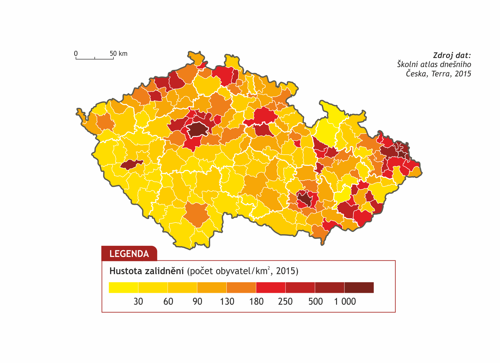
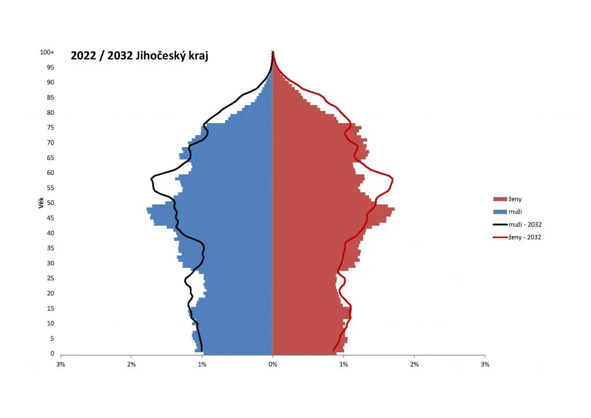
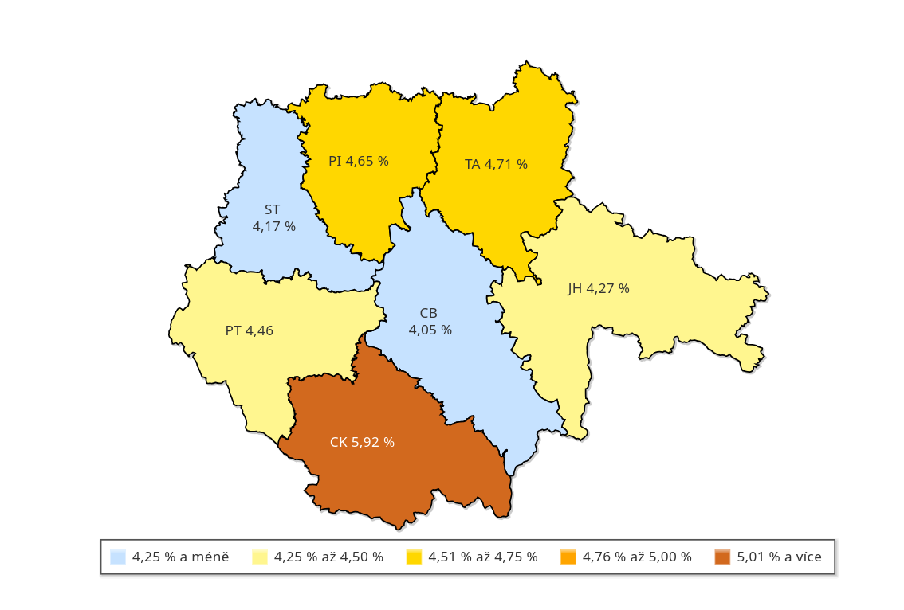

Počet obyvatel: 653 227
Obyvatel stále přibývá, ale přirozený přírůstej zůstává záporný
Počet obyvatel se zvyšuje díky zahraniční migraci
Počet obyvatel: 653 227
Obyvatel stále přibývá, ale přirozený přírůstej zůstává záporný
Počet obyvatel se zvyšuje díky zahraniční migraci
Jihořeský kraj patří mezi ty méně zalidněné
Hustota zalidnění je asi 64,9 obyvatel/km2
Nejhustěji zalidněné jsou České Budějovice


Na věkové pyramidě můžeme vidět, že nejpočetnější věková skupina je okolo 60 let
Ke staršímu věku roste převaha žen nad muži
Podle předpovědi bude i zde docházet ke stárnutí populace
Asi 94,5% obyvatelstva je české, moravské nebo slezské národnosti
80,5% abyvatel je ekonomicky aktivních (o 1,7% více, než český průměr)
Mužů je ekonomicky aktivních 85,1%, žen 75,8%
Pouze 3,1% jsou nezaměstnaní a mimo důchod

Město s vejvíce obyvateli je České Budějocive (94 000)
Následuje Tábor (34 000)
Třetí je Písek (30 000)